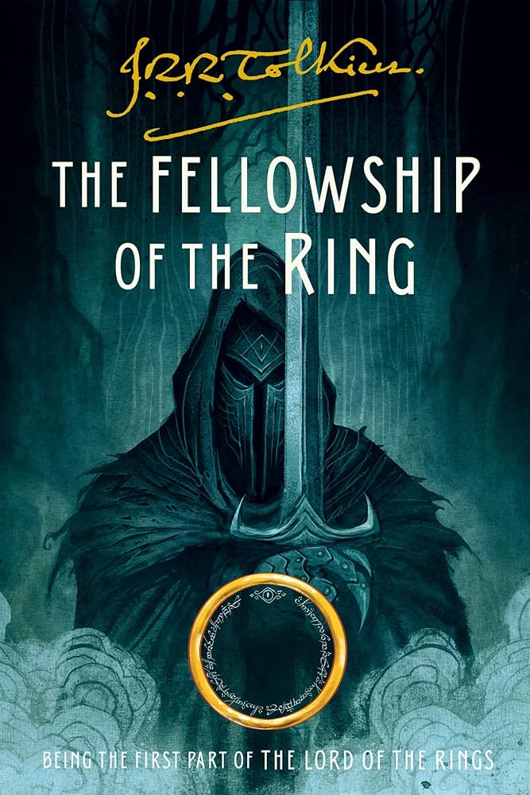

Age: 12–16
Genre: Fantasy
Rating: ★★★★★
The Fellowship of the Ring
The first part of J.R.R. Tolkien's epic trilogy, The Fellowship of the Ring follows Frodo Baggins and his companions as they embark on a perilous journey to destroy the One Ring and save Middle-earth from darkness.